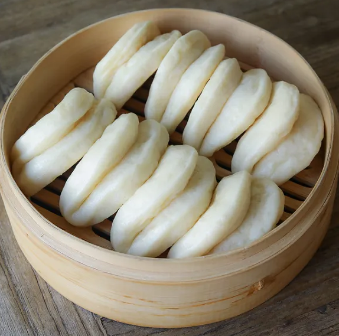

Bao Buns

Bao buns are basically a soft, fluffy dough that’s steamed with various fillings inside. It traditionally presents as a doughy closed bun wrapped around the filling and pinched at the top, but it can also be served open-faced as a “gua boa,” which is a flat, lotus-leaf style bun that folds over the filling. The fillings tend to be savory, balancing out the sweetness in bao dough. Pork is one of the most common ingredients resting inside the fluffy buns, sometimes pork belly but more often barbecue-style pork, appearing on menus as cha siu bao. Vegetarian versions of bao include doushabao, featuring a bean paste filling crafted from navy, soy, mung, azuki, or similar bean varieties.
Ingredients
- 100 ml lukewarm water
- 1 tsp instant yeast
- 1 tbsp sugar
- 1 1/2 tbsp oil
- 1 1/4 cups All Purpose Flour
- 1/2 tsp baking powder
- 1/2 tsp salt
Directions
- Mix together water, yeast, oil, and sugar. Let bloom for 10 minutes.
- In separate bowl, mix together dry ingredients.
- Combine dry and wet ingredients. Stir until everything combines. Once combined, transfer to dusted surface and start kneading for about 10 minutes til soft and nice. Give the shape of a ball and transfer to an oil coated container ensuring dough is covered lightly with oil. Cover with damp bowl and let rise for 45-60 minutes until doubled in size.
- Transfer dough to rolling surface and roll with a rolling pin until 1/8 inch. Cut into 8 equal portions. Can be smaller if want smaller buns. Fold buns in half and roll each portion very gently. Cover with wet cloth for about 30 minutes.
- Setup steamer. Cut portions of parchment paper. With steamer on high, add dough on pavement paper to steamer and steam for 10-12 minutes.